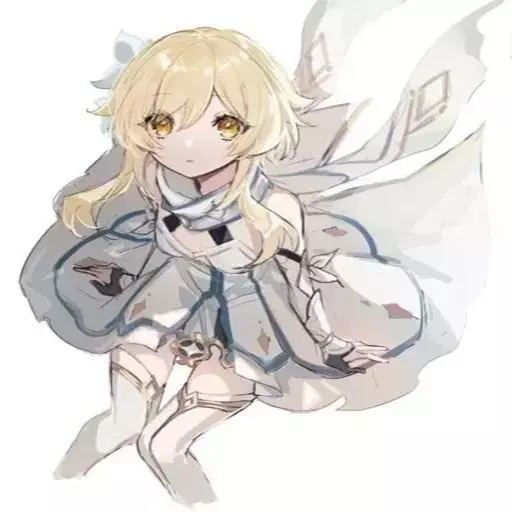

Люмин
Люмин и Итэр имеют разный стиль боя, а также несколько других отличий. Люмин имеет чуть более высокую скорость обычной атаки, а также её показатель силы заряженной атаки на 11,5% выше, чем у Итэра. Итэр обладает всеми преимуществами мужской средней модели персонажа и его скорость бега, спринта, карабканья, плаванья и некоторых других действий немного быстрее, чем у Люмин.Путешественник(ца) — играбельный персонаж и протагонист Genshin Impact.
В начале повествования игры брат и сестра, путешествующие по разным мирам, попадают в ловушку Неизвестного божества. Игроки могут выбрать одного из близнецов, Люмин (женщину) или Итэра (мужчину), в качестве протагониста. Вне зависимости от выбора, другой близнец оказывается захваченным, а силы самого(й) Путешественник (цы) будут запечатаны, оставляя его или её в Тейвате. На протяжении всей истории Путешественника(цу) сопровождает Паймон.